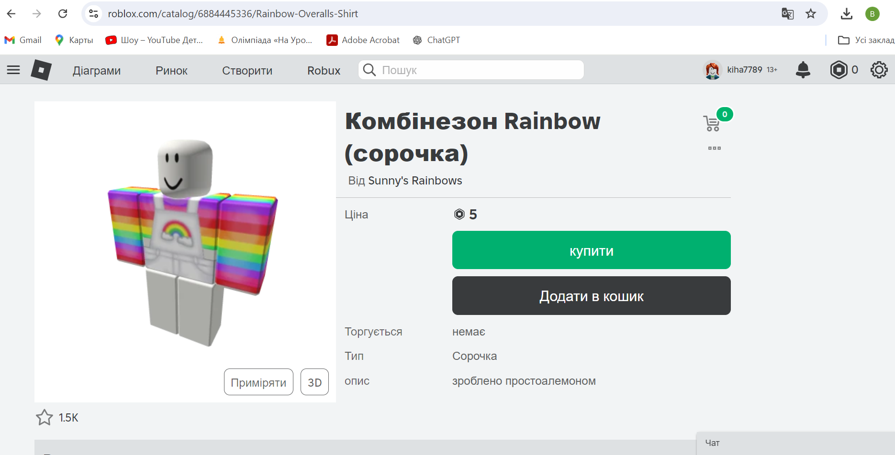
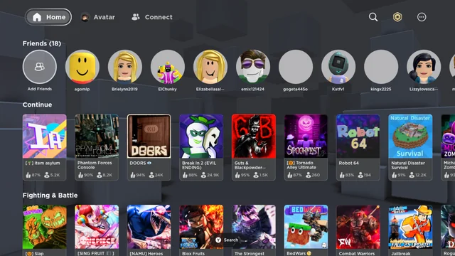
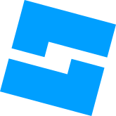

Roblox — це онлайн- ігрова платформа та система створення ігор , розроблена Roblox Corporation
Предмети та валюта
Roblox дозволяє гравцям купувати, продавати та створювати віртуальні предмети, які можна використовувати для прикраси свого віртуального персонажа, який служить їхнім аватаром на платформі. Раніше тільки адміністратори Roblox мали можливість продавати аксесуари, частини тіла, спорядження та пакети під офіційним обліковим записом користувача Roblox, віртуальні капелюхи та аксесуари
Меню роблокса
Меню роблокса з іграми. В роблоксі є дуже багато жанрів: пригодницькі ігри, паркур, гонки, ітд.
Видвижне меню

Roblox Premium
Roblox Premium— підписка яка дає тобі в місяць робукси. Ціна — 4,99 USD/місяць — 450 Robux, 9,99 USD/місяць — 1000 Robux, 19,99 USD/місяць — 2200 Robux. Roblox Premium дає можливості як: Отримання на 10 % більше робуксів коли ти їх купуєш, Обмін з іншими гравцями у яких тільки є Roblox Premium, Продажа предметів тільки для Roblox Premium, предметів з обмеженим тиражом і продажа класичних штанів та сорочок, Іконка Roblox Premium біля твого нікнейма. Roblox Premium раніше був Builders Clubом.
Студія Roblox 
Roblox дозволяє гравцям створювати власні ігри за допомогою свого власного механізму Roblox Studio, у які потім можуть грати інші користувачі. Ігри, які на платформі офіційно називаються «досвідами», створені за допомогою похідної мови Lua під назвою Lua u .Користувачі можуть створювати контент, який можна придбати, за допомогою одноразових покупок, відомих як «ігрові абонементи», а також мікротранзакцій , які можна придбати кілька разів, відомих як «продукти для розробників» або «продукти». Більшість ігор, створених за допомогою Roblox Studio, розробляються неповнолітніми, і загалом 20 мільйонів ігор на рік створюються з її допомогою.